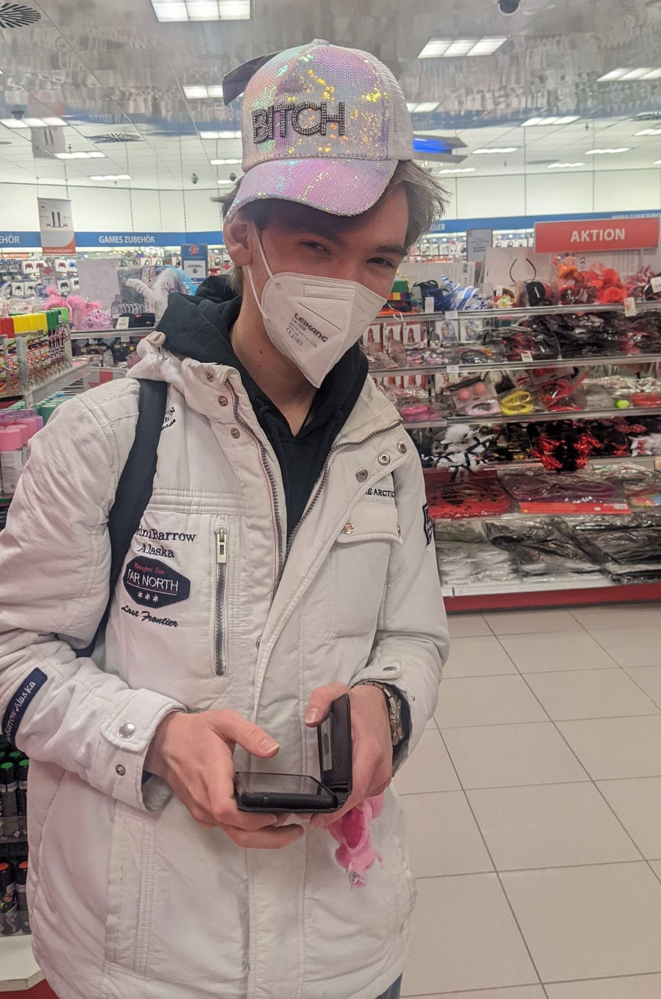

Berühmte Zitate in unbekannten Kreisen
Fabi
-
Zu Jonas: Wahlfotos oder Walfotos?
-
Jonas schaut Mädchen beim Tanzen zu, keine Reaktion von Fabi (lernt weiter), 10 min später läuft ein Hund vorbei Fabi is komplett abgelenkt und starrt den Hund mitten unterm Satz an
-
Zu Jonas: Unser Plan nicht mehr beim Kochen zu helfen geht auf - nachdem Sina dann doch selber die Nachspeise zubereiten musste
-
Zu Risiken und Nebenwirkungen fragen sie ihren Fabi oder Apotheker
Sina
-
Von mir wird erwartet, dass ich im Sommer mit nem Bikini rumrenn, deshalb... - Fabi: Du kannst auch mit Badehose kommen.

Jonas
-
Jonas passt beim Chat nicht auf und antwortet nach der Aussage "Ka ob ich Kinder will" mit "Tja, ich hab Lebkuchen"
-
Die brauchen noch bissl - Jonas zu amarettini
-
Sina: Welche Mail habt ihr genommen? Fabi : Stud. Jonas : "Ich hab ads"
-
Am Wochenende spätestens. Sonst hab ich ein Problem.